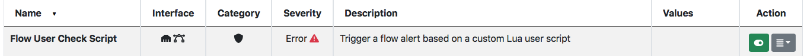

4. Проверки потока
Проверки потока написаны на C++ из соображений эффективности. Однако ntopng также позволяет вам написать свой собственный поток. проверяет Lua, например, для обнаружения аномалий в протоколах OT (коды функций Modbus используются слишком часто, собственные протоколы, содержащие значения, выходящие за пределы диапазона) без изменения ntopng.
Чтобы их использовать:
Включите Сценарий проверки пользователя потока поведенческая проверка(Настройки > Поведенческие проверки > Потоки).
Поместите свои скрипты, по одному обнаружению на файл, в /etc/ntopng/custom_checks/flows/ (любое имя, оканчивающееся на .lua).
Перезапустите ntopng или сохраните конфигурацию поведенческих проверок: скрипты загружаются снова.

Журнал ntopng сообщает о каждом загруженном скрипте (Загружен сценарий пользовательского потока <файл> [title: <title>] на <интерфейс>.) и сценарии отбрасываются с указанием причины (например, неизвестный ключ или неверный IP-адрес). Скрипт, который не работает Во время работы сообщается один раз, а остальные сценарии продолжают работать.
Два полных примера установлены в скрипты/обратные вызовы/проверки/потоки/примеры/ (modbus_function_code_rate.lua и проприетарный_протокол_range.lua): скопируйте их в /etc/ntopng/custom_checks/flows/ и адаптировать их.
4.1. Формат сценария
Скрипт возвращает таблицу:
return {
title = "Modbus custom function code rate", -- optional, default: the file name
score = 100, -- optional, default 50: score of its alerts (1-255)
hooks = { "periodic", "end" }, -- optional, default: all
filter = { l7_proto = "Modbus", ip = "10.10.0.0/16" }, -- optional, default: every flow
exclude = { srv_port = 8080 }, -- optional: flows to skip
check = function(flow)
if flow.srv_port() == 502 and flow.bytes() > 1000000 then
flow.triggerAlert("Too much Modbus traffic to " .. flow.srv())
end
end,
}
проверять (обязательный) вызывается для каждого потока, соответствующего фильтру, в выбранных перехватчиках.
крючки: обнаружен (когда nDPI обнаруживает протокол приложения), периодический (периодически во время потока активный), конец (когда поток закончится).
Каждый скрипт запускается в своем собственном интерпретаторе Lua, который сохраняется на протяжении всего запуска ntopng (по одному на каждый интерфейс): локальные переменные. скрипта сохраняют свое значение между потоками и между перехватчиками.
4.2. Проточные фильтры
фильтр выбирает потоки, которые получает скрипт; исключать (те же поля) пропускает потоки. Фильтры оцениваются на ntopng перед вызовом сценария, поэтому сценарий с узким фильтром ничего не стоит в других потоках.
cli_ip, srv_ip: IP-адрес или сеть клиента или сервера (CIDR), IPv4 или IPv6
ИП: клиент или сервер (любая сторона)
cli_порт, srv_port: порт клиента или сервера
порт: порт клиента или сервера (с любой стороны)
l4_proto: имя (TCP, UDP, ICMP, ICMPv6, GRE, ESP, SCTP, IGMP) или номер
l7_прото: nDPI имя протокола (например. Modbus, DNS, TLS) или номер, совпадающий как в приложении, так и в главный протокол
Каждое поле принимает значение или список. Все поля должны совпадать; список соответствует любому из его значений.
Например { ip = { "10.0.0.0/8", "192.168.1.5" }, port = { 502, 20000 } } выбирает потоки с
любая сторона в 10.0.0.0/8 или равна 192.168.1.5, на порту 502 или 20000.
4.3. Оповещения
flow.triggerAlert(сообщение) (или flow.triggerAlert(оценка, сообщение)) вызывает Пользовательский скрипт оповещение о потоке, с названием сценария. Когда в одном потоке запускаются несколько сценариев, поток имеет одно оповещение со всеми их названия и сообщения, а также наивысший балл.
В обозревателе оповещений (Поток вкладка) Пользовательский скрипт фильтр выбирает оповещения по названию скрипта: = для точное название, содержит для части его. Предпочитайте заголовки, состоящие из букв, цифр и пробелов: кавычки и <, > нельзя использовать в фильтре.
4.4. Помощники
- counter.inc(ключ, window_secs [, n])Добавляет н (по умолчанию 1) на счетчик ключ в окне окно_сек секунд (по умолчанию 60) и возвращает количество окон; новое окно начинается по истечении срока его действия. Используйте его для проверок «слишком много раз в минуту», например
counter.inc(flow.srv() .. "/65", 60) > 100. - counter.get(ключ)Количество текущего окна ключ, 0 по истечении срока действия.
- счетчик.сброс (ключ)Очищает счетчик ключ.
4.5. Методы объекта потока
- поток.cli()Чтение IP-адреса клиента потока (строка)
- поток.cli_port()Чтение порта клиента потока (номер)
- поток.srv()Чтение IP-адреса сервера потока (строка)
- поток.srv_port()Чтение порта сервера потока (номер)
- поток.протокол()Чтение протокола уровня потока 4 (номер)
- поток.vlan_id()Прочитайте поток VLAN Id (число)
- поток.is_oneway()Проверьте, является ли поток однонаправленным, что означает отсутствие трафика от сервера к клиенту (логическое значение).
- поток.is_unicast()Проверьте, есть ли у потока одноадресные узлы (логическое значение).
- поток.cli2srv_bytes()Чтение байтов потока от клиента к серверу (число)
- поток.srv2cli_bytes()Чтение байтов потока от сервера к клиенту (число)
- поток.байты()Чтение общего количества (отправленных + полученных) байтов потока (число)
- поток.l7_master_proto()Прочитайте основной протокол потока nDPI (номер)
- поток.l7_proto()Прочитайте протокол приложения потока nDPI (номер)
- поток.l7_proto_name()Прочитайте имя протокола потока nDPI (строка)
- поток.направление()Чтение направления потока (например, local2remote) (строка)
- поток.http()Для потоков HTTP он сообщает информацию о протоколе (например, URL-адрес HTTP или код возврата) или ноль в противном случае (таблица).
- поток.dns()Для потоков DNS он сообщает информацию о протоколе (например, имя домена) или ноль в противном случае (таблица).
- поток.ssh()Для потоков SSH он сообщает информацию о протоколе (например, подпись клиента SSH) или ноль в противном случае (таблица).
- поток.tls_quic()Для потоков TLS/QUIC он сообщает информацию о протоколе (например, шифры TLS или SNI) или ноль в противном случае (таблица).
- поток.json_info()Дополнительные поля, отправленные зондом вместе с потоком (например, поля, извлеченные плагинами nProbe), в виде таблицы; пустая таблица, когда ее нет (таблица)
- поток.ot()Протоколы OT, разделенные ntopng для потока:
modbus,s7comm,profinet,iec104, каждый с, например.function_codes(вызовы по коду функции с момента запуска потока),function_codes_transitions,registers(Modbus) иnum_exceptions; пустая таблица для других потоков (таблица) - flow.triggerAlert([оценка,] сообщение)Запускает оповещение для выбранного потока. Сообщение (строка) представляет собой удобочитаемое описание проблемы; необязательная оценка (число до 255) переопределяет оценку сценария.